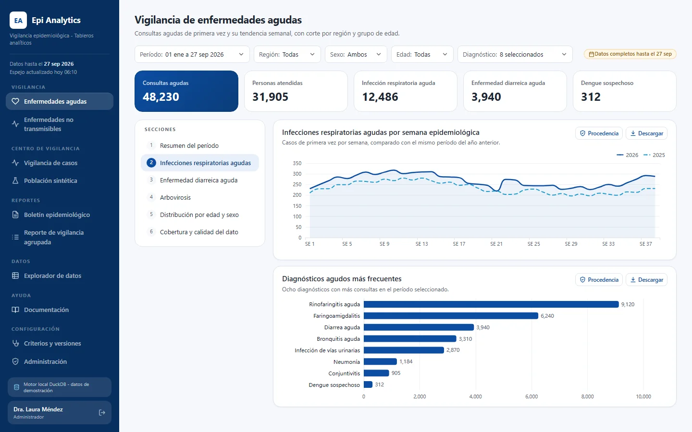
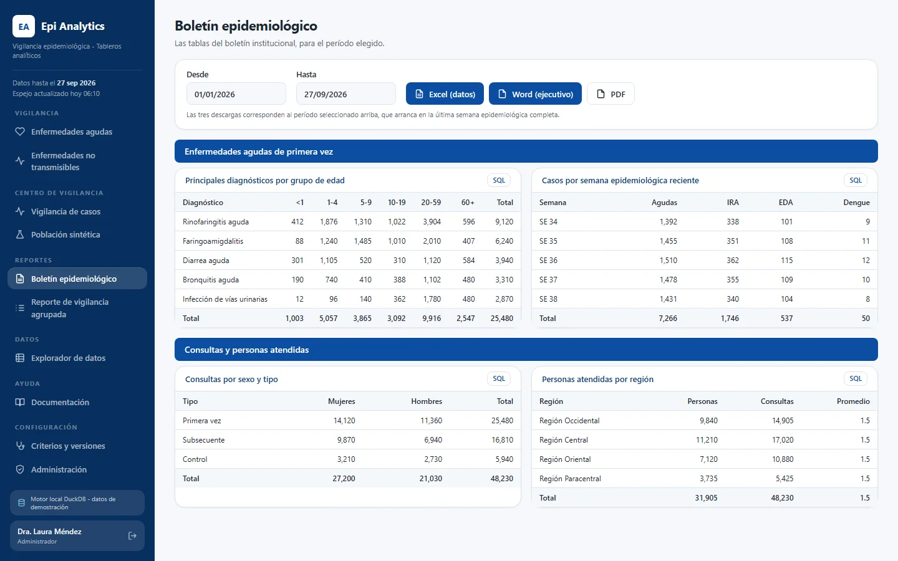
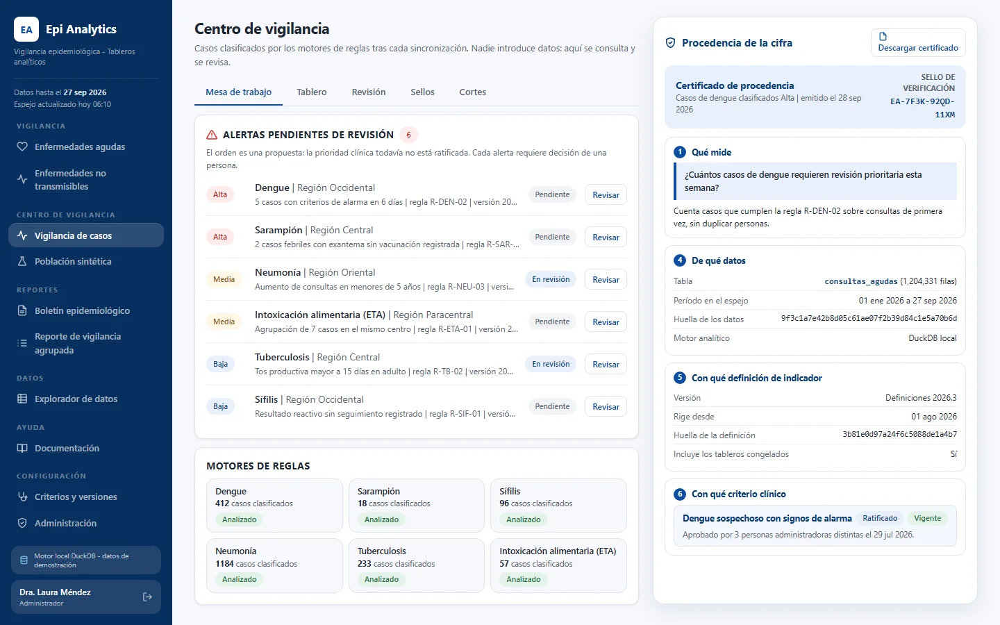

Plataforma de analítica epidemiológica
Plataforma de vigilancia epidemiológica que replica una vista de un almacén de datos en la nube en una base de datos analítica local y sirve tableros, boletines, reportes y un centro de vigilancia sobre esa copia, de modo que consultar no cuesta nada, responde en milisegundos y cada cifra puede auditarse.
- 6 a 20usuarios
- 0costo en el almacén de datos por interacción
- 4.18 millonescitas, al 2026-08-24
En uso activo. Cifras reportadas en 2026. Ver las pantallas
Problema
La unidad de epidemiología trabajaba sobre un almacén de datos en la nube. Surgieron cuatro problemas a la vez:
- Costo de las consultas. Cada interacción del tablero que llegaba al almacén costaba dinero y, a gran volumen, activaba alarmas de seguridad en una fuente de datos monitoreada.
- Reportes lentos. El filtrado interactivo sobre millones de citas no era lo bastante rápido a demanda.
- Cifras que nadie podía defender. Un número en pantalla no podía rastrearse hasta la regla que lo produjo, hasta quién lo consultó ni hasta cómo reproducirlo.
- Acceso lento a la información. Obtener un corte específico de los datos implicaba esperar a que alguien lo produjera.
Solución
Una sola aplicación, una imagen de contenedor con cuatro roles, que copia la vista del almacén una vez por ciclo de sincronización y sirve todo desde la copia.
Almacén en la nube (solo lectura) -> un escaneo -> Parquet -> base de datos analítica local -> API + tableros
- El costo pasa de «por consulta» a «una vez por ciclo de sincronización». La sincronización ejecuta primero una simulación (dry-run) y limita los bytes facturables; los tableros nunca tocan la nube.
- Los tableros son declarativos: cada gráfico es una especificación (consulta, codificación, filtros) que dibuja un front end genérico, y los filtros de un gráfico se derivan de su propia consulta, de modo que no puede afirmar que filtra lo que no filtra.
- Cifras auditables: cualquier número puede abrir un certificado de procedencia con la consulta exacta y una huella determinista de la tabla, exportable a Word. Las definiciones de las métricas están versionadas, una versión publicada congela el catálogo y un comando reproduce una cifra a partir de una versión dada.
- La actualidad de los datos se muestra, no se oculta: cada gráfico lleva un sello con la fecha de corte.
- Reportes: un boletín epidemiológico y reportes ejecutivos en Word y Excel.
- Centro de vigilancia (el motor basado en reglas que se describe abajo), integrado en la misma aplicación y con su propio rol de revisor.
Beneficios del motor de vigilancia basado en reglas
El centro de vigilancia ejecuta un motor basado en reglas que se integró a la plataforma. Sus reglas son deterministas y están versionadas, no aprendidas, de modo que la misma entrada siempre produce la misma clasificación, y eso es lo que permite a un clínico y a un auditor defender un resultado.
- Ejecuta seis motores de reglas (dengue, sarampión, emergencia por sarampión, sífilis, neumonía, sintomático respiratorio) que clasifican y priorizan casos, de modo que los revisores empiezan por los casos que requieren atención en lugar de leer cada registro.
- No diagnostica ni declara brotes: muestra señales para revisión humana, y los revisores registran su criterio y sus notas en cada caso.
- Su lógica está separada de la interfaz y protegida con pruebas golden, de modo que un cambio de regla se verifica por equivalencia antes de que cambie cualquier resultado.
- Los análisis se ejecutan de forma automática después de cada sincronización a partir de la copia analítica; nadie sube archivos, lo que elimina un paso manual y una fuente de inconsistencia.
- Cada acción relevante deja un registro de auditoría y el acceso se limita por rol (existe un rol de revisor dedicado).
El motor se originó como un proyecto de vigilancia independiente. Lo porté y lo integré a la plataforma, y lo extendí junto con su equipo original: se probó su equivalencia y se conectó al espejo compartido y a los roles.
Impacto
Cifras a agosto de 2026:
- Usuarios: 6 a 20.
- Costo de consulta contra el almacén: cero por interacción, medido en las notas de rendimiento del proyecto. Un único escaneo histórico de la vista de origen alimenta el espejo.
- Reportes: los tableros responden desde una copia local; una caché caliente responde en unos 1.5 ms, y la auditoría del 2026-09-29 midió que todos los gráficos respondían sin fallos.
- Las cifras pueden auditarse: certificado de procedencia, huella, definiciones versionadas y un comando de reproducción.
- Acceso más rápido a la información para la unidad, mediante tableros de autoservicio en lugar de solicitudes ad hoc.
- Escala: unos 4.18 millones de citas en la tabla analítica al 2026-08-24.
Mi rol
- Requerimiento y dominio, con la unidad de epidemiología y el área de gerencia médica, incluida una solicitud formal de modelo dimensional para un conjunto de datos analítico dedicado.
- Diseño de pantallas y de tableros.
- Desarrollo con asistencia de IA, siguiendo especificaciones escritas, registros de decisiones y auditorías.
- Preparé el paquete de entrega (contenedores, configuración, migraciones, documentación) y el traspaso al equipo de infraestructura.
Stack
Versiones tomadas del archivo de restricciones con versiones exactas del proyecto y de su documento de stack:
- Backend: Python 3.12, FastAPI 0.139.0, uvicorn 0.50.2, Pydantic 2.13.4.
- Analítica: DuckDB 1.5.4, pyarrow 24.0.0, dbt para los modelos de transformación, intercambio de Parquet con el almacén mediante el cliente de BigQuery (google-cloud-bigquery 3.42.1).
- Persistencia de la vigilancia: PostgreSQL 16, SQLAlchemy 2.0.52, Alembic 1.19.1, Procrastinate 3.9.0 (cola de trabajos).
- Frontend: React 18.3.1, Vite 7.3.6, TypeScript 5.9.3, Apache ECharts 6.1.0, Vitest 4.1.11.
- Calidad: pytest 9.1.1, ruff 0.15.20, mypy 2.2.0 en modo estricto.
- Entrega: Docker (imágenes base fijadas), flujo de CI con verificación de vulnerabilidades en las dependencias.
Humano en el circuito en este proyecto
Las rutas de evidencia que aparecen abajo corresponden a repositorios privados y se muestran como texto plano.
- Requerimientos de los usuarios, escritos y fechados:
odd/tasks/observaciones-agudas.md(13 observaciones, 2026-09-27) yapp/docs/REQUERIMIENTO_BI_GERENCIA_MEDICA.md(2026-09-16). - Especificaciones escritas antes del código:
openspec/changes/archive/2026-09-27-*/proposal.md,design.md,tasks.md. - Decisiones humanas registradas con sus motivos:
odd/tasks/correcciones-auditoria-2026-09-29.md(tabla de decisiones). - Auditoría independiente con doble verificación de los hallazgos que definen el veredicto:
app/docs/AUDITORIA_[SYSTEM]_2026-09-29.md. - Registros de decisiones fechados:
app/docs/adr/0001-stack-hibrido.md,0002-datos-costo-cero.md,0003-dbt-transformacion.md. - Cada dependencia registrada con su versión exacta y su motivo, y versiones vulnerables rechazadas:
app/docs/STACK_TECNOLOGICO.md, verificado porapp/backend/tests/test_constraints_imagen.py. - Bitácora de integración con un resultado de verificación por iteración:
app/docs/INTEGRACION_[ENGINE].md. - Traspasos:
app/docs/CONTINUIDAD.md,app/docs/ENTREGA_A_INFRAESTRUCTURA.md. - Material para presentar y defender el sistema:
app/docs/PITCH_Y_DEFENSA.md.
Estado
En uso activo por la unidad de epidemiología. Actualmente funciona contra un espejo local de la vista del almacén; mover la fuente a un conjunto de datos analítico dedicado es el siguiente paso previsto y no requiere desarrollo nuevo.
Pantallas



La información de estas pantallas ha sido anonimizada.